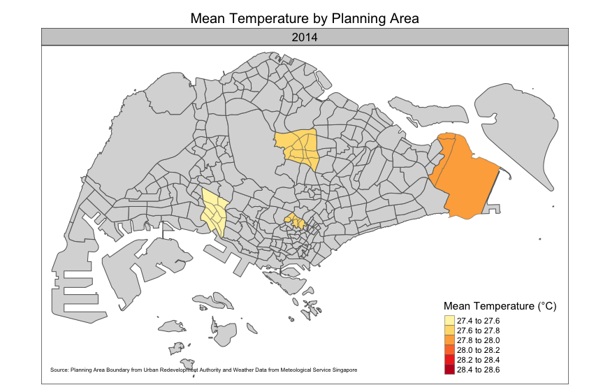
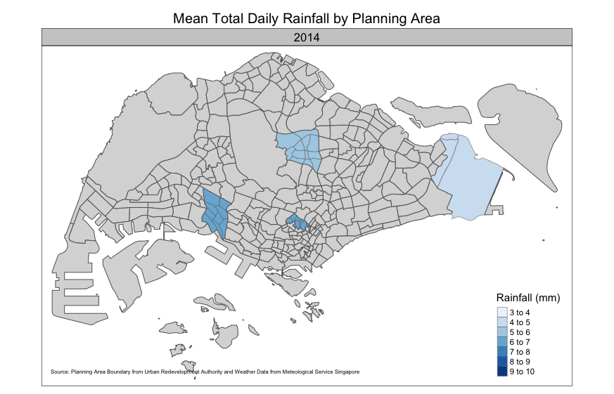

pacman::p_load(dplyr, tidyverse, fuzzyjoin,
ggplot2, plotly, tmap, leaflet, RColorBrewer, htmltools, gganimate, gifski)Prototyping Modules for Visual Analytics Shiny Application
In this exercise, we will be developing one of the modules in our proposed Shiny application.
1.0 Overview
Prototyping plays a pivotal role in the development of applications, serving as a foundation step that can significantly impact the success of the final product. By creating prototypes, we can visualise and refine our ideas, and identify potential flaws early. Prototyping can thus help mitigate risks, save time and resources and ensure that the final application aligns with the intended goals and requirements.
In this exercise, we will be developing the prototype for our Visual Analytics Shiny Application on Singapore’s climate. Specifically, we will be focusing on the prototype for the Historical Analysis module. This module seeks to visualise Singapore’s historical climate data (including rainfall, temperature and wind speed) through two tabs - Overview and Geographical.
2.0 Importing Relevant R Packages
The relevant R packages to be used are as follows:
dplyr - for manipulating data
tidyverse - for tidying data
ggplot2 - for creating plots from data
plotly - for introducing interactivity into ggplot2 figures
3.0 Data Preparation
3.1 Importing Data
Historical daily weather data was retrieved from the Meteological Service Singapore. It consists of data from January 2014 to December 2023 across 12 weather stations. The time period and weather stations were chosen to ensure completeness of the data across all attributes by referencing the station records provided by MSS.
The code chunk below downloads the weather data files for the chosen weather stations (S values) and time (yyyymm values) by fitting the two values into the base URL of ‘http://www.weather.gov.sg/files/dailydata/DAILYDATA_’. The tryCatch() function is used to handle errors that may occur during the download process. Specifically, if the file for certain combinations of weather stations and year is not found, it prints a message indicating that the file was not found and continues to the next file.
Code to scrape data from chosen weather stations from Jan 2014 to Dec 2023
# Define the base URL
base_url <- "http://www.weather.gov.sg/files/dailydata/DAILYDATA_"
# Define the range of S values (weather stations)
s_values <- c("S24", "S50", "S60", "S107", "S111", "S116", "S121", "S43", "S109",
"S104", "S106", "S107", "S115", "S117")
# Define the range of yyyymm values (from 201401 to 202312)
yyyymm_values <- c("201401", "201402", "201403", "201404", "201405", "201406", "201407",
"201408", "201409", "201410", "201411", "201412",
"201501", "201502", "201503", "201504", "201505", "201506", "201507",
"201508", "201509", "201510", "201511", "201512",
"201601", "201602", "201603", "201604", "201605", "201606", "201607",
"201608", "201609", "201610", "201611", "201612",
"201701", "201702", "201703", "201704", "201705", "201706", "201707",
"201708", "201709", "201710", "201711", "201712",
"201801", "201802", "201803", "201804", "201805", "201806", "201807",
"201808", "201809", "201810", "201811", "201812",
"201901", "201902", "201903", "201904", "201905", "201906", "201907",
"201908", "201909", "201910", "201911", "201912",
"202001", "202002", "202003", "202004", "202005", "202006", "202007",
"202008", "202009", "202010", "202011", "202012",
"202101", "202102", "202103", "202104", "202105", "202106", "202107",
"202108", "202109", "202110", "202111", "202112",
"202201", "202202", "202203", "202204", "202205", "202206", "202207",
"202208", "202209", "202210", "202211", "202212",
"202301", "202302", "202303", "202304", "202305", "202306", "202307",
"202308", "202309", "202310", "202311", "202312")
# Specify the folder to save the files
folder <- "Data/"
# Loop through each combination of s and yyyymm
for (s in s_values) {
for (yyyymm in yyyymm_values) {
# Construct the URL
url <- paste0(base_url, s, "_", yyyymm, ".csv")
# Construct the file name with folder path
filename <- paste0(folder, "DAILYDATA_", s, "_", yyyymm, ".csv")
# Download the file with error handling
tryCatch({
download.file(url, destfile = filename, mode = "wb")
cat("Downloaded", filename, "\n")
}, error = function(e) {
cat("File not found:", filename, "\n")
})
}
}The code chunk below reads all the CSV files saved in the previous step and combines them into a single data frame df. The resultant dataframe was saved as an .rds file format using write_rds().
Code to combine datasets into one
# Get list of files in the directory
file_list <- list.files("Data/WeatherData", pattern=".csv", full.names = TRUE)
# Initialize an empty list to store preprocessed data frames
preprocessed_data_frames <- list()
# Loop through each file
for (file in file_list) {
# Read the file and remove header row
data <- read_csv(file, locale(encoding="UTF-8"), show_col_types = FALSE)[-1, ]
# Replace "\x97" (special character to indicate no measurements done) with NA
data <- data.frame(lapply(data, function(x) str_replace_all(x, fixed("\x97"), NA)))
# Replace "ó" (special character to indicate no measurements done) with NA
data <- data.frame(lapply(data, function(x) str_replace_all(x, fixed("ó"), NA)))
# Replace "-" (special character to indicate no measurements done) with NA
data <- data.frame(lapply(data, function(x) str_replace_all(x, fixed("-"), NA)))
# Store the preprocessed data frame in the list
preprocessed_data_frames[[length(preprocessed_data_frames) + 1]] <- data
}
# Ensure all data frames have the same column names and order
combined_df <- do.call(rbind, preprocessed_data_frames)
# Naming columns
colnames(combined_df) <- c("Station", "Year", "Month", "Day", "Total Daily Rainfall", "Highest 30 Min Rainfall", "Highest 60 Min Rainfall", "Highest 120 Min Rainfall", "Mean Temperature", "Maximum Temperature", "Minimum Temperature", "Mean Wind Speed", "Max Wind Speed")
# Save combined_df as .rds file format
write_rds(combined_df, "Data/combined_df.rds")The read_rds() function was then used to read the R object.
df<- read_rds("Data/combined_df.rds")3.2 Data Cleaning
The following data cleaning steps were implemented on the data:
Handling Missing Values: Using
complete.cases()to check the rows with complete data, there are 2599 rows with NA values. Since our data has over 47,000 records and incomplete rows form only about 5% of the data, we will drop the rows with NA values for simplicity.Dealing with Duplicates:
combined_df[duplicated(combined_df), ]returned a data frame with zero rows, indicating that there are no duplicate rows. No further action was thus needed.Data Type Conversion: All columns are of character type. All columns except the ‘Station’ column was converted to its appropriate data type using
as.numeric().
Code to clean data
# Checking for NA records and dropping rows with NA records
cat('There are ', sum(!complete.cases(df)), 'rows with NA values')There are 2599 rows with NA valuesCode to clean data
df <- na.omit(df)
# Checking for duplicate records
# df[duplicated(df), ]
# Converting all columns to numeric form except first
df[, -1] <- lapply(df[, -1], as.numeric)4.0 Data Visualisation
For simplicity, we will use yearly intervals, all regions and the whole period from 2014 to 2023 for this section. The parameters of this visualisation to allow users to explore the data and customise the visualisation will be discussed later in Section 5.1.
4.1 Overview of Historical Daily Weather Data
In this section, we will be developing the prototype for an overview of the historical daily weather data.
Code to process data for plotting
# Selecting relevant columns
df1 <- df[, c(2:5, 9:11)] %>%
# Aggregating data using yearly intervals
group_by(Year) %>%
summarise(mean_temp = mean(`Mean Temperature`),
mean_maxtemp = mean(`Maximum Temperature`),
mean_mintemp = mean(`Minimum Temperature`),
mean_rainfall = mean(`Total Daily Rainfall`))
Design Considerations
Colour Differentiation: Distinct colours were used for the bars and lines to differentiate between the various rainfall and temperature data for greater clarity.
Visual Hierachy: More critical data points (temperature in this case) were emphasised by placing the temperature line plots above the rainfall bar charts. This helps viewers focus on the primary temperature information while still being able to interpret the secondary rainfall data.
Axis Labels and Units: The x-axis and y-axis were clearly labelled with its corresponding units to facilitate understanding.
Gridlines and Ticks: Vertical gridlines were retained to aid in interpretation and aligning data points. However, horizontal grid lines were removed as it clutters the chart and do not add significant value since the bars and line markers clearly denote the year to which the data point belong.
Legend: A legend was included to explain the meaning of each element in the chart.
Code for plotting
fig <-
plot_ly(data=df1,
x=~Year, # Set x=Year for yearly intervals
# Plotting line charts for temperature data
y=~mean_temp,
type='scatter', mode='lines+markers',
marker=list(color="#008000", size=5, line=list(color="#008000", width=1.5)),
line=list(color="#008000", width=1.5),
yaxis="y", # Specifying which axis to use
name="Mean Temperature") %>%
add_trace(y=~mean_maxtemp,
type='scatter', mode='lines+markers',
marker=list(color="#8B0000", size=5, line=list(color="#8B0000", width=1.5)),
line=list(color="#8B0000", width=1.5),
yaxis="y", # Specifying which axis to use
name="Maximum Temperature") %>%
add_trace(y=~mean_mintemp,
type='scatter', mode='lines+markers',
marker=list(color="#02367B", size=5, line=list(color="#02367B", width=1.5)),
line=list(color="#02367B", width=1.5),
yaxis="y", # Specifying which axis to use
name="Minimum Temperature") %>%
add_trace(y=~mean_rainfall,
type='bar',
marker=list(color="lightblue", line=list(color="black", width=1)),
yaxis="y2", # Specifying which axis to use
name="Total Daily Rainfall") %>%
layout(
title="Average Yearly Temperature and Rainfall Over the Years",
# Setting up x-axis
xaxis = list(title="Year",
tickmode="linear"), # Showing all tick marks
# Setting up primary y-axis
yaxis = list(overlaying="y2", # Set line plots to overlay bar chart
title="Average Yearly Temperature (°C)"),
# Setting up secondary axis
yaxis2 = list(side="right",
title="Average Yearly Rainfall (mm)",
automargin=TRUE),
# Formatting legend
legend = list(orientation='h', # Orientating legend
y=-0.2)) # Positioning legend to bottom of plot
fig4.2 Geographical Overview of Historical Daily Weather Data
In this section, we will be developing the prototype for a geographical overview of the historical daily weather data.
The geospatial data of the geographical boundary of Singapore at the planning subzone level is provided by data.gov.sg.
Code to process data for plotting
# Importing geospatial data
mpsz <- st_read(dsn = "Data/geospatial",
layer = "MP14_SUBZONE_WEB_PL")
# Selecting relevant columns
df2 <- df[, c(1:4, 5, 9)] %>%
# Aggregating data using yearly intervals
group_by(Station, Year) %>%
summarise(mean_rainfall = mean(`Total Daily Rainfall`),
mean_temp = mean(`Mean Temperature`)) %>%
ungroup()
# Joining attribute data and geospatial data
df2 <- df2 %>% mutate(Station = toupper(Station)) # Converting to uppercase
# Join based on SUBZONE_N = Station
mpsz_df2 <- left_join(mpsz, df2,
by=c("PLN_AREA_N"="Station" ))
write_rds(mpsz_df2, "Data/mpsz_ds2.rds")Code for plotting static map for temperature
# Reading data
mpsz_df2 <- read_rds("Data/mpsz_ds2.rds")
# Activating viewing mode
tmap_mode("plot")
# Plotting data by geography
map_static_temp <-
tm_shape(mpsz_df2) +
# Adding data points onto map
tm_fill("mean_temp",
style="pretty", # Display many colours over continuous palette
palette="YlOrRd", # Using yellow, orange, red palette for temperature data
title = "Mean Temperature (°C)") +
# Labelling plot
tm_layout(main.title="Mean Temperature by Planning Area",
main.title.position="center",
main.title.size=1.2,
legend.height=0.65,
legend.width=0.35,
legend.position=c("right", "bottom"),
frame=TRUE) +
tm_borders(alpha=0.5) +
# Adding caption to cite sources
tm_credits("Source: Planning Area Boundary from Urban Redevelopment Authority and Weather Data from Meteological Service Singapore",
position=c("left", "bottom"))Code for plotting animated map for temperature
# Activating viewing mode
tmap_mode("plot")
map_static_temp <- map_static_temp +
# Plotting by year
tm_facets(by="Year",
nrow=1, ncol=1,
free.coords=FALSE,
drop.NA.facets=TRUE) + # Drop facets with Year = NA
# Adding grey polygons for NA values - needed to standardise map across all years
tm_shape(mpsz_df2[is.na(mpsz_df2$mean_temp), ]) +
tm_polygons(fill = "grey")
# Plotting animated map
tmap_animation(map_static_temp, delay=75,
filename="map_temp.gif")
Code for plotting static map for rainfall
# Activating viewing mode
tmap_mode("plot")
# Plotting data by geography
map_static_rainfall <-
tm_shape(mpsz_df2) +
# Adding data points onto map
tm_fill("mean_rainfall",
style="pretty", # Display many colours over continuous palette
palette="Blues", # Using blue palette for temperature data
title = "Rainfall (mm)") +
# Labelling plot
tm_layout(main.title="Mean Total Daily Rainfall by Planning Area",
main.title.position="center",
main.title.size=1.2,
legend.height=0.65,
legend.width=0.35,
legend.position=c("right", "bottom"),
frame=TRUE) +
tm_borders(alpha=0.5) +
# Adding caption to cite sources
tm_credits("Source: Planning Area Boundary from Urban Redevelopment Authority and Weather Data from Meteological Service Singapore",
position=c("left", "bottom"))Code for plotting animated map for rainfall
# Activating viewing mode
tmap_mode("plot")
map_static_rainfall <- map_static_rainfall +
# Plotting by year
tm_facets(by="Year",
nrow=1, ncol=1,
free.coords=FALSE,
drop.NA.facets=TRUE) + # Drop facets with Year = NA
# Adding grey polygons for NA values - needed to standardise map across all years
tm_shape(mpsz_df2[is.na(mpsz_df2$mean_temp), ]) +
tm_polygons(fill = "grey")
# Plotting animated map
tmap_animation(map_static_rainfall, delay=75,
filename="map_rainfall.gif")
As we only have data for 12 weather stations, the significant portion of grey polygons on the map are due to the missing weather data for the respective weather stations. The data was limited to ensure that the plots could be developed quickly. When the Shiny application is developed, we would expected to have a more complete data of more than 60 weather stations to have a more comprehensive map.
5.0 User-Interface (UI) Design of Shiny Application
In this module of the application, the user is able to select the weather data from their preferred weather station(s) to analyse and compare the various time series timeline they are interested in. Through this, the user is able to understand the historical trends and average of temperature and/or rainfall data during the selected time period.
5.1 Storyboard of Shiny Application

5.2 User-Specified Parameters of Shiny Application
The figure below shows some of the interactive features of the application. The main objective is to allow users to have an overview of the historical data of their selection weather station(s) and time period.

The parameters users can specify include the following:
Averaging Period: Users can choose the averaging period they prefer, including monthly, 1-year, 5-years or 10-years, using the drop-down list.
Period for Analysis: Users can choose the start and end date they prefer, from January 1980 to current using the slider. However, limited data is available from January 1980 to December 2013 and may cause the plots to be incomplete.
Weather Station(s): Users can choose their preferred weather station(s) by checking the checkboxes of weather stations they are interested in. A checkbox for “All weather stations” will be included for convenience.
Update Data: Users can choose to update the data to include the most current data points available on the MSS website. The application is built using data up till December 2023. Users may be interested in analysing more current weather data and can include such points using the “Update Data” button to scrape the data from the MSS website.
Selection of Map Type: Users can choose to display temperature or rainfall data on the map using the radio buttons available. Users can also choose the type of data to be displayed, such as mean, maximum or minimum, using the drop-down list.
Selection of Plot: Users can choose the data points they wish to display on the plot by toggling through the legend of the plot.